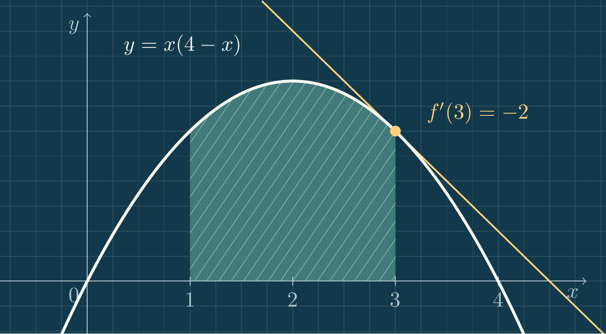

Cαlculus
A textbook on change and accumulation, from limits and derivatives to differential equations and infinite series.

Practice by topic
9 PDF worksheets- Pre-CalculusFunctions, identities, and trigonometry
- Limits and ContinuityLimits, discontinuities, and the IVT
- DerivativesDifferentiation rules and tangent lines
- Derivative ApplicationsRelated rates, curve sketching, and optimization
- IntegrationSubstitution, parts, and partial fractions
- Integration ApplicationsArea, volume, centroids, and work
- Differential EquationsGeneral solutions and decay models
- Sequences and SeriesConvergence, power series, and Taylor series
- Complex NumbersPolar form, arithmetic, and roots